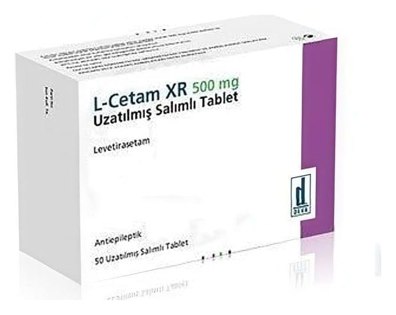

L-Cetam XR 500 mg Uzatılmış Salımlı Tablet, 50 Adet

Ne için kullanılır
KT · Bölüm 1L-CETAM XR, 500 mg levetirasetam içeren 50 tabletlik ambalajlarda sunulan film kaplı tablettir.
L-CETAM XR 500 mg uzatılmıĢ salımlı tablet; beyaz, oval, bikonveks, film tablettir.
L-CETAM XR, epilepsi (sara) nöbetlerinin tedavisinde kullanılan antiepileptik (sara nöbetlerini önleyici) bir ilaçtır.
Epilepsi tanısı konmuĢ 16 yaĢ ve üzerindeki hastalarda, parsiyel (kısmi) baĢlangıçlı nöbetlerin tedavisinde, diğer antiepileptik ilaçlara ilave olarak kullanılır.